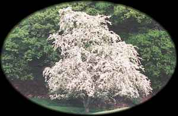
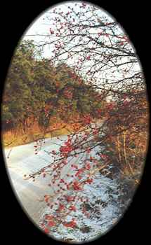
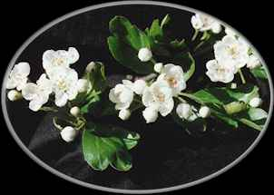

Huath
Hawthorn (May 13 - June 9)

Hawthorn - Like willows, hawthorns have many species in Europe, and they are not always easy to tell apart. All are thorny shrubs in the Rose family (Rosaceae), and most have whitish or pinkish flowers. The common hawthorn (Crataegus monogyna Jacq.) and midland hawthorn (Crataegus laevigata (Poiret) DC.) are both widespread. They are common in abandoned fields and along the edges of forests. Both are cultivated in North America, as are several native and Asiatic hawthorns. Curtis Clark

Hawthorn Berry 'larder' for birds.

